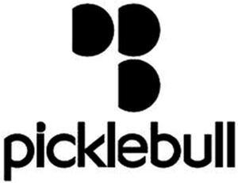

Trade Mark Journal No.2025/042 17 October 2025
WO0000001878872 (18,25,28)
Office of origin: European Union Intellectual Property Office (EUIPO)
Date of International Registration:26 June 2025
Date of designation in the UK:
26 June 2025

International priority date claimed: 5 February 2025
(European Union Intellectual Property Office (EUIPO))
(019139232)
- Class 18
- Leather and imitation leather; animal skins; trunks and suitcases; umbrellas and parasols; walking sticks; whips, harness and saddlery; bags, purses, pocket wallets and transport bags; card wallets; vanity cases (empty); coin holders (purses); backpacks; vanity cases; parasols; luggage, bags; shoulder strap; wallets; bags for toiletries; bags of leather; sports bags; travel bags; bags and briefcases of skin; leather bags; bags for sports; handbags; cloth bags, leather wallets; luggage; luggage, satchels and other transport bags; cases and briefcases; business card holders; card cases, suitcases; carry-on bags; wallets, pocketbooks, leather wallets, executive wallets, luggage wallets (leather goods); traveling sets, traveling sets [leatherware]; all-purpose sports bags; travel bags; card cases (notecases); card cases (leatherware); hat boxes for travel; hat boxes of leather; belt bag; garment bags, shirt covers and garment covers; briefcases; fashion bags; boxes of leather; purses and tote bags; wallets not of precious metal; key cases; key wallets; leather key cases; key cases of imitation leather.
- Class 25
- Clothing; footwear; headwear; sun visors; cap peaks; sportswear; shirts; T-shirts; polo shirts; tops (clothing); short trousers; trousers; skirts; sweatshirts; unitards; jackets; wind-resistant jackets; socks; tracksuits; wristbands; headbands against sweating; sports footwear; sneakers; hats; caps; handkerchiefs (clothing).
- Class 28
- Sports articles; padel rackets; rackets; racket and paddle grip tapes; protective tapes for paddle and racket frames; tubes for collecting and storing balls; balls; racket and paddle covers.
AGUIRRE Y COMPAÑIA, S.A.
Representative: PONS IP, S.A., Glorieta Rubén Darío, 4, E-28010 Madrid, SPAIN